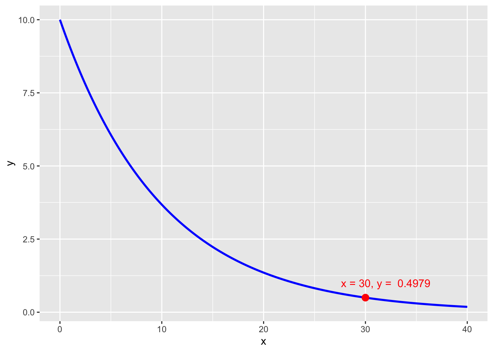

Starting here a few examples on how to graph functions, how to solve equations and differential equations with computational methods.
Basic graphs of a functions.
Let’s take the function \[Q(t) = 10 e^{- \frac{t}{10}}\] We want to graph this in the interval 0-40 for instance and know what is the value of \(Q\) when \(t=30\).
library(dplyr)library(ggplot2)df <-tibble(x =seq(from =0, to =40, length.out =200)) |>mutate(y =10*exp(-x/10))df_point <-tibble(x =30, y =10*exp(-x/10))ggplot(df, aes(x, y)) +geom_line(color ='blue', size =1) +geom_point(data = df_point, aes(x, y), color ='red', size =3) +geom_text(data = df_point, aes(x+2, y+0.5, label =paste('x = 30, y = ', round(y, 4))), color ='red')

Graphing slope fields from differential equations
Solving \[\frac{dN}{dt} = r \cdot N \cdot \left( 1 - \frac{N}{K} \right)\]
library(deSolve)model <-function(time, y, parms) {with(as.list(c(y, parms)), { dN <- r * N * (1- N/K)list(dN) })}y =c(N =0.1)parms <-c(r =0.1, K =10)times <-seq(0, 100, 1)out <-ode(y, times, model, parms)plot(out)
# finding S(t) for specific value of timelibrary(dplyr)yo <-as_tibble(out) |>select(t = time, S ='1')yo |>filter(t ==20)
# A tibble: 1 × 2
t S
<deSolve> <deSolve>
1 20 98.66667
Using Python
Euler’s method
Let’s define \(y' = f(x, y)\) and a small increment \(h\) which is a small steps on the interval \([x_0, b]\). We obtain \(h\) by dividing that interval in \(n\) eaual parts. Hence \(h = \frac{b - x_0}{n}\). Finally, we approximate \(y\) in the following way: \[y_{i+1} = y_i + h \cdot f(x_i, y_i)\] We need a starting point: \(y(x_0) = y_0\) and \(x_0 = 0\) and \(x_1 = x_0 + h\) and so on.
Problem 1
Approximate the function \[y' + 2y = x^3 \cdot e^{-2x}\] at \(x = 1.7\) using increment of \(h = 0.01\). This is an initial-value problem with \(y(0) = 1\)
import numpy as np#defining the function first def f(x, y): return(-2*y + x**3* np.exp(-2*x))# defining the recurisve loop to approximate y'## in our problem: h = 0.01, xn = 1.7def euler_method(f, x0, y0, h, xn): n = np.rint(xn / h).astype(int) x = np.linspace(x0, xn, n) y = np.zeros(n) y[0] = y0 for i inrange(1, n): y[i] = y[i-1] + h * f(x[i-1], y[i-1]) return x, y# approximatinig our ODEx0=0y0=1h=0.01xn=1.7x, y = euler_method(f, x0, y0, h, xn)
And bonus we could add some graphs to it
import matplotlib.pyplot as pltplt.clf()plt.plot(x, y)plt.xlabel('x')plt.ylabel('y')plt.title('Approximate solution to an ODE using Euler\'s method' )plt.show()